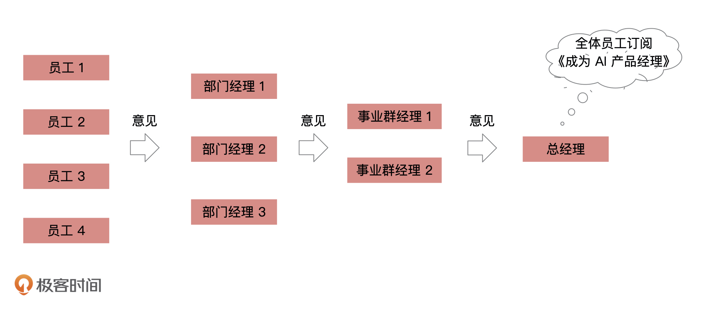
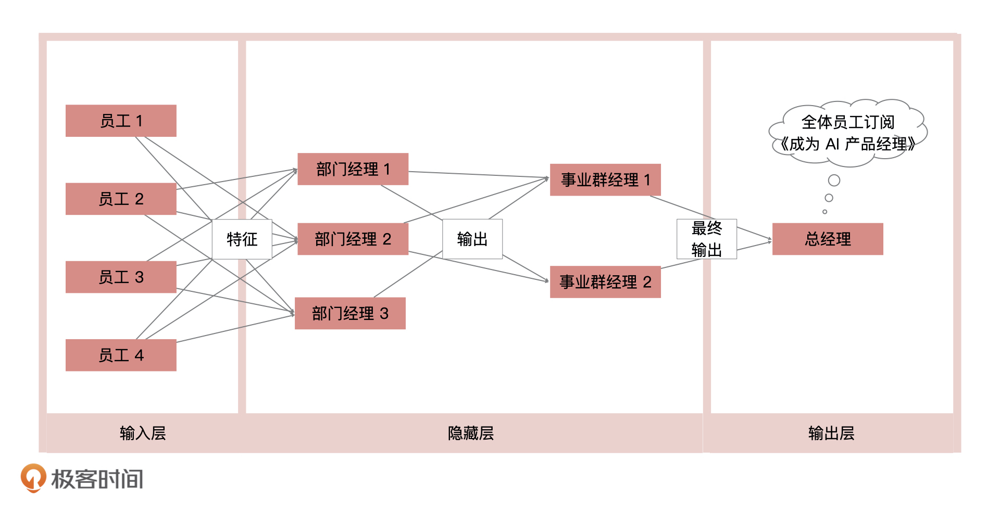
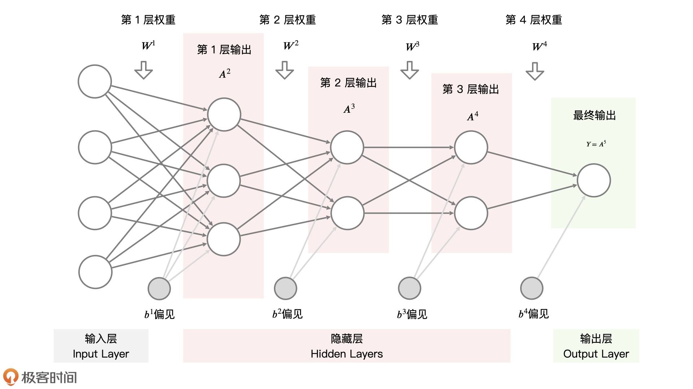
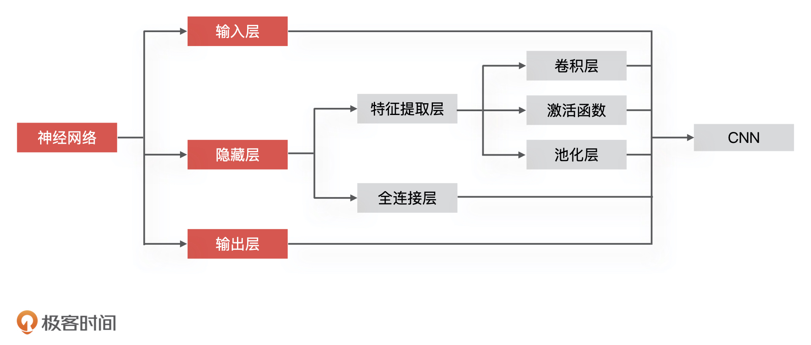
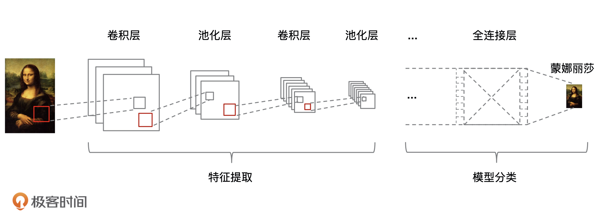
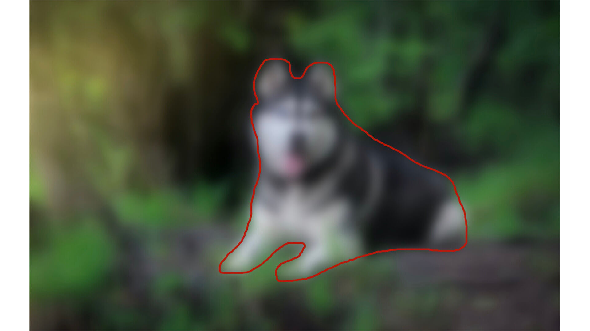

- 00 开篇词 你好，产品经理！你的未来价值壁垒在哪儿？.md.html
- 01 行业视角：产品经理眼中的人工智能.md.html
- 02 个人视角：成为AI产品经理，要先搞定这两个问题.md.html
- 03 技术视角：AI产品经理需要懂的技术全景图.md.html
- 04 过来人讲：成为AI产品经理的两条路径.md.html
- 05 通过一个 AI 产品的落地，掌握产品经理工作全流程.md.html
- 06 AI 模型的构建过程是怎样的？（上）.md.html
- 07 AI模型的构建过程是怎样的（下）.md.html
- 08 算法全景图：AI产品经理必须要懂的算法有哪些？.md.html
- 09 K近邻算法：机器学习入门必学算法.md.html
- 10 线性回归：教你预测，投放多少广告带来的收益最大.md.html
- 11 逻辑回归：如何预测用户是否会购买商品？.md.html
- 12 朴素贝叶斯：让AI告诉你，航班延误险该不该买？.md.html
- 13 决策树与随机森林：如何预测用户会不会违约？.md.html
- 14 支持向量机：怎么预测股票市场的涨与跌？.md.html
- 15 K-means 聚类算法：如何挖掘高价值用户？.md.html
- 16 深度学习：当今最火的机器学习技术，你一定要知道.md.html
- 17 模型评估：从一个失控的项目看优秀的产品经理如何评估AI模型？.md.html
- 18 核心技能：产品经理评估模型需要关注哪些指标？.md.html
- 19 模型性能评估（一）：从信用评分产品看什么是混淆矩阵？.md.html
- 20 模型性能评估（二）：从信用评分产品看什么是KS、AUC？.md.html
- 21 模型性能评估（三）：从股价预测产品看回归算法常用的评估指标.md.html
- 22 模型稳定性评估：如何用PSI来评估信用评分产品的稳定性？.md.html
- 23 模型监控：产品经理如何建设算法模型监控指标体系？.md.html
- 24 推荐类产品（一）：推荐系统产品经理的工作职责与必备技能.md.html
- 25 推荐类产品（二）：从0打造电商个性化推荐系统产品.md.html
- 26 预测类产品（一）：用户复购意向预测的底层逻辑是什么？.md.html
- 27 预测类产品（二）：从0打造一款预测用户复购意向的产品.md.html
- 28 预测类产品（三）：从0打造一款“大白信用评分产品”.md.html
- 29 自然语言处理产品：从0打造一款智能客服产品.md.html
- 30 AI产品经理，你该如何提升自己的价值？.md.html
- 31 AI产品经理面试，这些问题你必须会答！.md.html
- 春节加餐1 用户增长模型：怎么利用AI技术判断新渠道性价比？.md.html
- 春节加餐2 一次答疑，带你回顾模型评估的所有基础概念.md.html
- 期中周测试题 ，你做对了吗？.md.html
- 期中答疑 AI产品经理热门问题答疑合集.md.html
- 结束语 唯一不变的，就是变化本身！.md.html
- 捐赠
16 深度学习：当今最火的机器学习技术，你一定要知道
你好，我是海丰。
深度学习（Deep Learning）是一种特殊的机器学习，是借鉴了人脑由很多神经元组成的特性而形成的一个框架。相对于普通的机器学习，深度学习在海量数据情况下的效果要比机器学习更为出色。
并且，自从 2016 年 Alpha Go 打败了李世石之后，深度学习就正式确立了在机器学习领域中的霸主地位。可以说，目前所有应用了人工智能的行业，基本都用到了深度学习模型。因此，产品经理也必须要了解深度学习的基础知识。
这节课，我们就来学习这个当今最火的机器学习技术，以及它的应用场景和算法效果。
如何理解深度学习？
因为深度学习可以简单理解为多层的神经网络模型，所以想要理解深度学习，我们就要先理解神经网络。接下来，我就通过一个例子来讲讲什么是神经网络。
什么是神经网络？
假如，你现在就职于一家很“民主”的公司，每年年终总结的时候，公司会让每一名员工写下自己对公司的意见，并且收集起来。为了节约行政成本，这些意见都会由当前层级的领导整合后，提交给他的上一级领导。
比如说，每个“部门组长”收集所有“部门员工”的意见，整合后统一提交给所有“部门经理”。每个“部门经理”收集所有“部门组长”的意见，整合后统一提交给所有“事业群经理”。就这样层层汇总传递，最后由事业群经理汇总提交给总经理，下图就是这个公司收集员工意见的流程图。

这个例子其实完全可以通过机器学习模型来描述。我们可以把每个“员工”的意见，想象成机器学习中的“特征”，把每一层“领导”对收集上来的意见的整合，想象成当前层级的“输出”，最后把“总经理”收到的结果想象成模型的“最终输出”。这样一来，就形成了一个多层级的机器学习模型，也就是我们说的神经网络。
具体来说，我们可以把这个神经网络用三层结构来表示，分别为输入层、隐藏层，以及输出层。其中，隐藏层对我们来说是黑盒，隐藏层中的每上一个隐藏层的输出都是下一个隐藏层的输入，每一层都是在表达一种中间特征，目的是将特征做非线性高阶变换。

在这个神经网络的结构中，不同层级之间的联系是非常紧密的，因为每个连接层之间的节点（领导），都会和上下两个层级中的所有节点（领导）进行沟通。我们也把这种结构叫做全连接神经网络模型。
神经网络模型的组成

上图这样由“圆圈”和“连接线”组成的图就是神经网络结构图，我们可以通过一个数学公式来表达：\(A^{(n+1)}=\\delta^{n}(W^{n}A^{n}+b^{n})\)。
理解公式是理解神经网络组成的关键，接下来我就给你详细讲讲这些参数都是什么。
首先，图中的一个个“圆圈”就是 Neuron（神经元），表示当前层级下计算节点的输出，也就是\(A^{(n+1)}\)，我们可以把它想象成某个层级的领导对收集上来的意见整合后的结果。
而“连接线”就是 Weights（网络权重），表示不同层级之间的连接，用\(W^{n}\)表示。我们可以把它想象成不同员工意见的权重，比如核心员工的意见份量就重一些，绩效差的员工份量就轻一些。
同时，因为每个人所在公司位置不同，所以对于意见的反馈结果也会不同。比如，有些“部门经理”在收到员工的意见后，决定直接放大负面反馈的意见，而有些“部门经理”则决定谨慎处理，减少负面意见反馈的声音。在机器学习中，我们会把这些带有主观偏见的处理，叫做神经网络模型中的 bias 偏移，用\(b^{n}\)表示。
说到这，不知道你意识到一个问题没有，如果只是把“员工”意见反馈给“总经理”，那中间几层的“领导”就没有存在意义了，因为“员工”完全可以直接跳过所有“领导”把意见传递给最终的“总经理”。
因此，神经网络模型还设计了一个对下层意见解读和调整的操作。一般来说，我们会采用增加激活函数对每一层整体的输出做改进，把每层的结果做非线性的变化，去更好地拟合数据分布，或者说来更好地展示给上层的“领导”。常见的激活函数有 \(ReLU\)、\(tanh\)、\(Sigmoid\)等等，我们用\(\\delta^{n}()\)表示。
深度学习模型训练目标
理解了神经网络的基本知识之后，深度学习模型的训练目标就很好理解了。
前面的学习让我们知道，监督类机器学习模型的目标就是在给定一个任务的情况下，找到最优化的参数，使得 Loss 损失值最小，其中 Loss 损失值就是预测结果和真实结果之间的误差。
神经网络作为一个有监督机器学习模型，自然也不会例外，它的目标就是在给定一个任务的情况下，找到最优的Weights 和 bias，使得 Loss 最低。
由于最开始的参数都是随机设置的，因此获得的结果肯定与真实的结果差距比较大。那么，为了训练神经网络中的参数，神经网络模型会采用反向传播，把 Loss 误差从最后逐层向前传递，使当前层知道自己在哪里，然后再更新当前层的 Weights 权重和 bias 偏移，进而减小最后的误差。这部分数学推导比较复杂，产品经理只要了解就可以了。
深度学习的应用案例：图像识别是如何实现的？
近几年，神经网络在图像处理和自然语言处理方面都有非常大的成果。所以，我们也借助一个图像识别的案例，来讲讲深度学习的应用。
如今，图像识别这项技术已经发展得很成熟，卷积神经网络（Convolutional Neural Networks，CNN）又是其中的主流技术，像Facebook、Google、Amazon等公司都在利用 CNN 进行图像识别的工作。
CNN是如何实现图像识别的？
下面，我们就来学习一下，CNN 实现图像识别的具体过程。
因为 CNN 是深度学习的算法之一，所以它同样包含输入层、隐藏层，以及输出层这三大部分，更具体点来说，CNN 的整个组成部分可以分为，数据输入、特征提取、全连接以及输出层四个部分。其中，特征提取、全连接对应神经网络的隐藏层，数据输入和输出层对应神经网络的输入层和输出层。同样的，我也把它和神经网络的对应关系梳理出来了，如下图所示。

接下来，我就结合下面的示意图，给你详细讲讲它对图像的处理过程。

CNN 实现图像处理的第一步，就是把图像数据输入到 CNN 网络模型中。我们在第3讲中讲到，任意一张彩色图片都可以表示成一个三阶张量，即三维数组。
其实所有彩色图像都是由红、绿、蓝（RGB）叠加而成的，比如一个 12px * 12px 的图像可以用 3 个 12 * 12 的矩阵来表示，如果是白色的图像就可以表示成 GRB(255, 255, 255)。 那么， CNN 网络模型的数据输入就是将彩色图像分解为 R、G、B 这 3 个通道，其中每个通道的值都在 0 到 255 之间。
数据输入之后，就到了特征提取的阶段了。在讲具体操作之前，我想你肯定会有一个疑问：为什么CNN就适合于图像类的任务，全连接神经网络为什么不可以呢？
这是因为，CNN 能够在众多深度学习算法中，以最短时间提取图像的特征。普通的神经网络对输入层与隐藏层会采用全连接的方式进行特征提取，所以在处理较大图像的时候，处理速度就会因为计算量巨大而变得十分缓慢。这个时候，计算能力就会成为最大的瓶颈。如果换成现在互联网上动不动就出现的高清大图，全连接神经网络就更行不通了。
举个例子，人在识别图像的时候，图像越清晰越好，但是这一点对于机器来说却很难，因为机器在识别图像的时候，往往需要将图像转换成像素值，再输入到模型中进行学习，而越清晰的图片意味着需要处理的像素越多，会带来更多的计算压力。
为了解决这个问题，CNN 就通过过滤无关信息，来提高识别效率。比如下面的这张图片，背景对于图像识别来说其实没有帮助的，反而増加了很多干扰信息。
那么，如何有效地过滤掉干扰信息，并且识别图像中的主体信息呢？做法就是不断模糊化一张图片，最后只剩下狗的轮廓，而背景信息这类无关项就会越来越不可见。

对于 CNN 网络模型来说，“模糊化图像”的这个操作就是通过 CNN 的卷积和池化来实现的。
我们先来看卷积运算。CNN 的每一个隐含单元（即，前文中的各中间层“领导”）只连接输入单元（即上一层输入）的一部分，这样就能让模型中不同输出对应不同的局部特征。对应到图像中，就是可以提取图像的不同局部特征，从而实现既减少了输入值，又提取到了图像的最主要的内容。
在完成各层的卷积运算后，深度学习模型还需要进行非线性的变换，非线性的变换是通过增加激活函数来实现的，通过激活函数将“线性回归”拟合的直线编程曲线，这样可以拟合各种复杂的问题，这里激活函数选型的是 \(ReLU\)函数。非线性变换的内容我们在“逻辑回归”那节课也讲过，你也可以去回顾一下。
池化的目的也是提取特征，减少向下一阶段传递的数据量，池化过程的本质是“丢弃”，即只保留图像主体特征，过滤掉无关信息的数据特征。
CNN 的所有卷积和池化操作都是在提取特征，直到全连接层才进入真正的训练学习阶段，做最后的分类计算。在 CNN 中，全连接层一般是用的是 Softmax 函数来进行分类，这部分我们简单了解就行了。
深度学习的优缺点
接下来，我再结合深度学习的优缺点，来说说它的适用场景。
首先，深度学习的可解释性非常差，因为它的内部计算复杂，对我们来说是一个黑盒，我们只需要输入数据，由它来告诉我们结果，至于为什么会这样，它不做任何解释。所以在很多对解释性要求比较高的场景，比如信用评级、金融风控等情况下，深度学习没办法使用。
其次是训练深度学习模型非常消耗资源，所以想利用深度学习网络进行实际工作，我们就必须要提前准备好相应的计算资源，如硬件设备。
最后，因为深度学习模型复杂，对数据依赖很强，所以它比我们之前讲的传统机器学习网络更难理解和学习。因此，在实际工作中，训练深度学习模型也需要配置专业的人才。
总之，深度学习具有可解释性弱，模型训练慢，对数据依赖很强，模型复杂这四个缺点。尽管深度学习的应用有着非常苛刻的条件，但是相对于它的模型性能来说，这些成本的付出还是值得的。深度学习自身的神经网络结构，让它每层的 Activation 激活函数都可以做非常复杂的非线性变化，这也意味着你的模型可以拟合任意复杂的数据分布，所以，它比我们之前讲过的所有算法的性能都要好。
总结
今天，我们围绕深度学习，讲解了它的原理结构、优缺点和应用场景。
深度学习是机器学习的一种，它源于神经网络模型的研究，由输入层、隐藏层，以及输出层组成，在计算机视觉、语音识别、自然语言处理等领域应用最为广泛。
在目前的机器学习领域中，它可以说是性能最好的网络模型了。但同时，它也具有可解释弱，模型训练慢，对大数据有依赖，模型复杂度高的缺点，这让它的应用场景受到了局限。
因此，在目前工业中，深度学习常用来处理计算机视觉、人脸识别、语音识别、机器翻译、自然语言处理、推荐系统等等。
最后，我还想补充一点，除了我们今天讲的CNN，深度学习还有很多其他的模型，比如 LSTM、RNN、Seq2Seq、Gen，以及很多开源的深度学习框架，比如 TensorFlow、PyTorch 等等。这些都为算法工程师构建和使用神经网络创造了极大的便利，并且在实际的工作中，他们通常也会选择这些框架来进行模型的构建和训练。作为产品经理，如果你掌握了我们今天讲的内容，你也可以结合自己的业务，多去了解一下这些内容。
课后讨论
最后，我还想请你介绍一下，你曾经在工作中遇到过的深度学习模型案例，以及当时为什么要基于深度学习来做？
欢迎在留言区给分享你的故事，也欢迎你把这节课分享给你的朋友，我们下节课见！
© 2019 - 2023 Liangliang Lee. Powered by gin and hexo-theme-book.